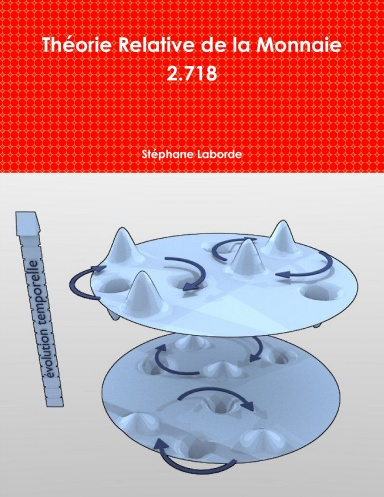

<section data-markdown>
  <script type="text/template">
    # Théorie Relative de la Monnaie<br/>(TRM)

    Découverte en 2010, par **Stéphane Laborde**.

    

    ---

    ## Définie 4 **libertés économiques**

    - Liberté **du choix** du système monétaire
    - Liberté **d’utilisation** des ressources
    - Liberté **d’estimation et de production** de toute valeur
    - Liberté **d’échanger** dans la monnaie

    ---

    ## Définie une monnaie **Libre**

    - Equitable entre les individus
    - Equitable dans le temps
    - Equitable dans l'espace

    ---

    ## La découverte du DU

    Seule solution **mathématique** possible au problème de la monnaie libre :

    - Création de la monnaie par **Dividende Universel** (DU)

    - Répartition identique de la **nouvelle** monnaie

    - **Croissance** régulière de la masse monétaire (`~$10$` % / an)

    ---

    # Symétrie spatiale & temporelle

    Equitable dans le temps : tient compte de l'**espérance de vie**

    Equitable dans l'espace : indexée sur les **vivants**

    

    ---

    # Symétrie spatiale & temporelle


    
    
    
    

    ---

    # Calcul du Dividend Universel

    $ DU\(t) = c * M\(t) / N\(t) $

    Avec la croissance `$c$` entre `$5$%` et `$10$%`

    ---

    # Nouvel invariant

    Le **$ DU\(t) $** est l'**invariant** économique.

    Universel, il permet de **mesurer correctement** les valeurs économiques.

    Il exprime une valeur **relative** à la masse monétaire.

  </script>

</section>
